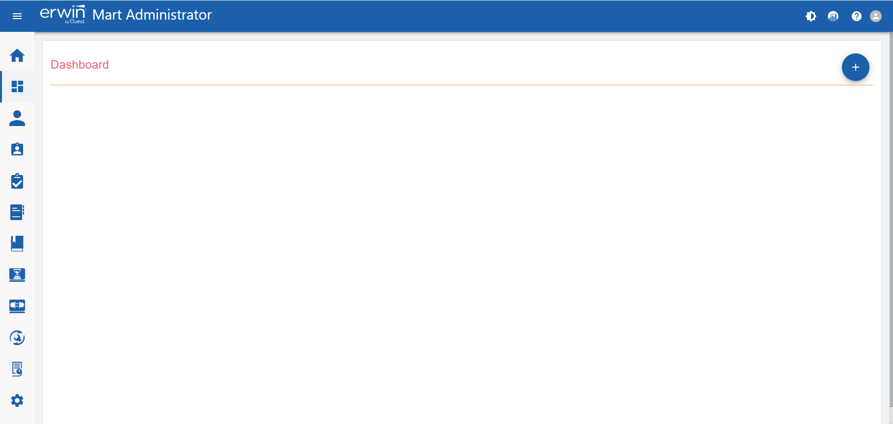
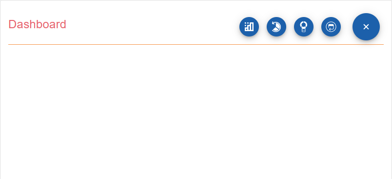
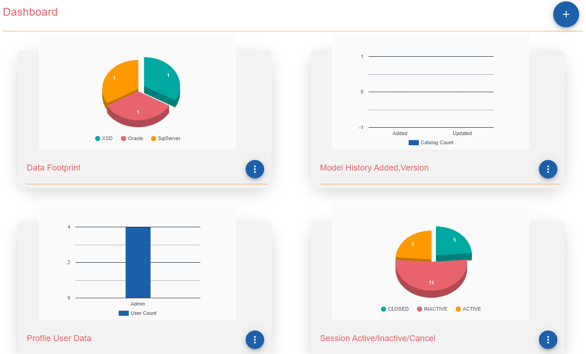

The configurable dashboard enables you to add and view a pictorial presentation of your data and actions on the Mart. You can add charts for your data footprint, model overview and history, profile data, and session overview.
To access dashboard, on the menu, click Dashboard. The Dashboard page appears. By default, the dashboard does not have any charts added to it.

To add charts, follow these steps:
On the Dashboard page, click .
The available chart types slide out.

Use this chart to view the type of data that you have in your catalogs.
Use this chart to view model history in terms of when they were added and updated.
Use this chart to view user count under each profile type.
Use this chart to view the number of active, inactive, and closed sessions.
Charts are added to the Dashboard.
